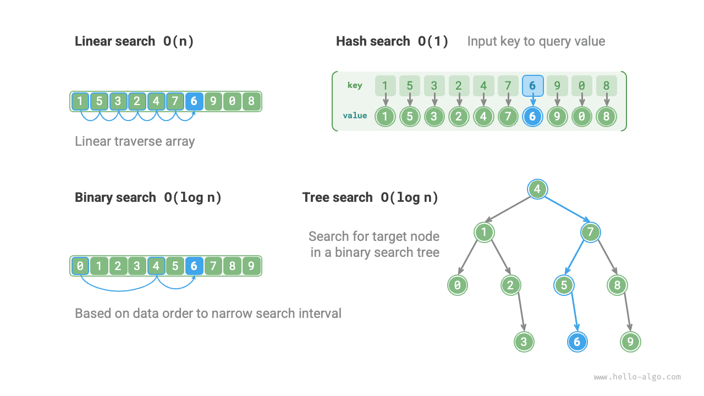

البحث
إعادة النظر في خوارزميات البحث
تُستخدم خوارزميات البحث للبحث عن عنصر واحد أو مجموعة عناصر تستوفي شروطاً محددة في بنى البيانات (مثل المصفوفات أو القوائم المترابطة أو الأشجار أو الرسوم البيانية).
ويمكن تقسيم خوارزميات البحث إلى الفئتين التاليتين بناءً على أسلوب تنفيذها:
- تحديد موقع العناصر الهدف عبر اجتياز بنية البيانات، مثل اجتياز المصفوفات والقوائم المترابطة والأشجار والرسوم البيانية.
- تحقيق بحث فعّال عن العناصر بالاستفادة من طريقة تنظيم البيانات أو معلومات مسبقة عنها، مثل البحث الثنائي والبحث بالتجزئة والبحث في شجرة البحث الثنائية.
وبما أن هذه الموضوعات قد طُرحت في الفصول السابقة، ينبغي أن تكون خوارزميات البحث مألوفة لدينا. وفي هذا القسم نعيد النظر فيها من منظور أكثر منهجية.
البحث بالقوة الغاشمة
يحدد البحث بالقوة الغاشمة موقع العناصر الهدف عبر اجتياز كل عنصر من عناصر بنية البيانات.
- ينطبق «البحث الخطي» على بنى البيانات الخطية مثل المصفوفات والقوائم المترابطة. ويبدأ من أحد طرفي بنية البيانات ويصل إلى العناصر واحداً واحداً حتى يُعثر على العنصر الهدف أو يُبلَغ الطرف الآخر دون العثور عليه.
- «البحث بالعرض أولاً» و«البحث بالعمق أولاً» استراتيجيتان لاجتياز الرسوم البيانية والأشجار. يبدأ البحث بالعرض أولاً من العقدة الابتدائية ويبحث طبقة بعد طبقة، زائراً العقد من القريب إلى البعيد. أما البحث بالعمق أولاً فيبدأ من العقدة الابتدائية ويسير في مسار حتى نهايته، ثم يتراجع ويجرّب مسارات أخرى حتى تُجتاز بنية البيانات بأكملها.
ميزة البحث بالقوة الغاشمة أنه بسيط وذا عمومية جيدة، إذ لا يتطلب معالجة مسبقة للبيانات ولا بنى بيانات إضافية.
غير أن التعقيد الزمني لهذه الخوارزميات هو $O(n)$، حيث $n$ عدد العناصر، لذا يكون الأداء ضعيفاً عند التعامل مع كميات كبيرة من البيانات.
البحث التكيّفي
يستفيد البحث التكيّفي من خصائص البيانات نفسها (مثل الترتيب) لتحسين عملية البحث وتحديد موقع العناصر الهدف بكفاءة أعلى.
- يستخدم «البحث الثنائي» ترتيب البيانات لتحقيق بحث فعّال، ولا ينطبق إلا على المصفوفات.
- يستخدم «البحث بالتجزئة» جداول التجزئة لتخزين البيانات القابلة للبحث كأزواج مفتاح-قيمة، بما يتيح استعلامات فعّالة.
- يعمل «البحث بالشجرة» على بنى شجرية محددة (مثل أشجار البحث الثنائية)، ويستبعد العقد بسرعة عبر مقارنة قيم العقد لتحديد موقع العنصر الهدف.
ميزة هذه الخوارزميات كفاءتها العالية، إذ يصل التعقيد الزمني إلى $O(\log n)$ أو حتى $O(1)$.
غير أن استخدام هذه الخوارزميات يتطلب غالباً معالجة مسبقة للبيانات. فمثلاً يتطلب البحث الثنائي ترتيب المصفوفة مسبقاً، بينما يتطلب كل من البحث بالتجزئة والبحث بالشجرة بنى بيانات إضافية، كما أن صيانة هذه البنى تتطلب تكاليف زمنية ومكانية إضافية.
غالباً ما تُسمّى خوارزميات البحث التكيّفي خوارزميات الاسترجاع (lookup algorithms)، وهي تُستخدم أساساً لاسترجاع العناصر الهدف بسرعة في بنى بيانات محددة.
اختيار طريقة البحث
بمعطى مجموعة بيانات حجمها $n$، يمكننا استخدام البحث الخطي أو البحث الثنائي أو البحث بالشجرة أو البحث بالتجزئة وغيرها من الطرق للبحث عن العنصر الهدف. ويوضح الشكل أدناه مبادئ عمل كل طريقة.

ويلخّص الجدول أدناه كفاءة هذه الطرق وخصائصها.
جدول
| البحث الخطي | البحث الثنائي | البحث بالشجرة | البحث بالتجزئة | |
|---|---|---|---|---|
| البحث عن عنصر | $O(n)$ | $O(\log n)$ | $O(\log n)$ | $O(1)$ |
| إدراج عنصر | $O(1)$ | $O(n)$ | $O(\log n)$ | $O(1)$ |
| حذف عنصر | $O(n)$ | $O(n)$ | $O(\log n)$ | $O(1)$ |
| مساحة إضافية | $O(1)$ | $O(1)$ | $O(n)$ | $O(n)$ |
| معالجة مسبقة للبيانات | / | الترتيب $O(n \log n)$ | بناء الشجرة $O(n \log n)$ | بناء جدول التجزئة $O(n)$ |
| البيانات مرتبة | غير مرتبة | مرتبة | مرتبة | غير مرتبة |
ويعتمد اختيار خوارزمية البحث أيضاً على حجم البيانات ومتطلبات أداء البحث وتكرار استعلام البيانات وتحديثها، وغير ذلك.
البحث الخطي
- عمومية جيدة، ولا يتطلب عمليات معالجة مسبقة للبيانات. فإذا احتجنا إلى استعلام واحد فقط عن البيانات، فقد تستغرق المعالجة المسبقة التي تتطلبها الطرق الثلاث الأخرى زمناً أطول من البحث الخطي نفسه.
- مناسب لكميات البيانات الصغيرة، حيث يكون أثر التعقيد الزمني على الكفاءة أقل.
- مناسب للحالات التي يكون فيها تكرار تحديث البيانات مرتفعاً، إذ لا تتطلب هذه الطريقة أي صيانة إضافية للبيانات.
البحث الثنائي
- مناسب لمجموعات البيانات الكبيرة، بأداء مستقر وتعقيد زمني في أسوأ الحالات $O(\log n)$.
- لا يمكن أن يكون حجم البيانات كبيراً جداً، لأن تخزين المصفوفات يتطلب مساحة ذاكرة متجاورة.
- غير مناسب للحالات التي تتكرر فيها عمليات إدراج البيانات وحذفها، لأن صيانة مصفوفة مرتبة تتطلب تكاليف مرتفعة.
البحث بالتجزئة
- مناسب للحالات التي تتطلب أداء استعلام عالياً، بتعقيد زمني متوسط $O(1)$.
- غير مناسب للحالات التي تتطلب بيانات مرتبة أو عمليات بحث في نطاق، لأن جداول التجزئة لا تستطيع الحفاظ على البيانات بترتيب مرتب.
- اعتماد كبير على دوال التجزئة واستراتيجيات معالجة تصادم التجزئة، مع خطر كبير من تدهور الأداء.
- غير مناسب لكميات البيانات الضخمة جداً، لأن جداول التجزئة تتطلب مساحة إضافية لتقليل التصادمات ومن ثمّ تقديم أداء استعلام جيد.
البحث بالشجرة
- مناسب لمجموعات البيانات الضخمة، لأن عقد الشجرة تُخزَّن في الذاكرة بشكل غير متجاور.
- مناسب للحالات التي تتطلب الحفاظ على بيانات مرتبة أو إجراء عمليات بحث في نطاق.
- أثناء الإدراج والحذف المتواصلين للعقد، قد تميل أشجار البحث الثنائية، فيتدهور التعقيد الزمني إلى $O(n)$.
- إذا استُخدمت أشجار AVL أو الأشجار الحمراء-السوداء، يمكن أن تعمل جميع العمليات باستمرار في زمن $O(\log n)$، غير أن الحفاظ على توازن الشجرة يضيف تكاليف إضافية.